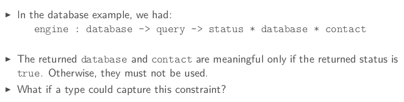
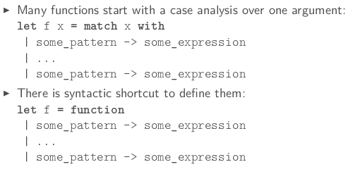
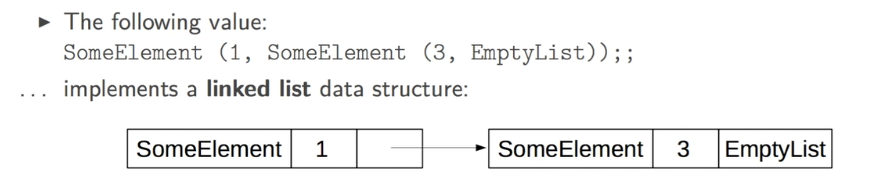
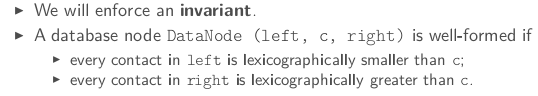

Last week, we only defined flat data structures which are nice to aggregate values but quite limited when you try to structure values.
This week: algebraic datatypes.
1. TAGGED VALUES

⇒ change the return type to a type query_result, which can be either of these:
- an error
- a new database (in case of successful insertion/deletion)
- a contact and its index (in case of successful search)
in ocaml, can define such a type (called sum type) by :
# type query_result =
| Error
| NewDatabase of database
| FoundContact of contact*int;;
More generally, to define disjoint union of types:
type some_type_identifier =
| SomeTag of some_type
| ...
| SomeTag of some_type
tag must start with uppercase letter
Taga are also called conscturcors, grammar is like java constructors: SomeTag (some_expr, ..., some_expr) (the parenthesis can be omitted if only 1 expr is required)
enumeration:
type color = Black | Gray | White;;
observing tagged values
must prvide an expression for each possible case of the value. A case is described by a pattern:
SomeTag (some_pattern, ..., some_pattern)
A branch is composed of a pattern an an expr separated by an arrow. some_pattern -> some_expr
pattern matching is a seq of branches:
match some_expr with
| some_pattern -> some_expr
|...
| some_pattern -> some_expr
example:
let engine db query =
match query with
| Insert contact -> insert db contact
| Delete contact -> delete db contact
| Search name -> search db name;;
synatactic shortcut: function keyword (for functions with only 1 argument)

pitfalls
- ill-typed pattern
- non-exhaustive case analysis
These errors can be caught by the checker.
2. RECURSIVE TYPES
data structures with unbounded depth, ie, list/tree.
For example, an integer list can be defined as:
# type int_list =
| EmptyList
| SomeElement of int * int_list;;
type int_list = EmptyList | SomeElement of int * int_list
in the machine:

functions on such datastruct usually use pattern matching:
# let rec length = function
|EmptyList -> 0
|SomeElement (x,l) -> 1 + length l;;
val length : int_list -> int = <fun>
The predefined type in ocaml: t list
- empty list:
[]([]is just a special tage corresponding to EmptyList) - head and tail:
i::r(::is just a special tage corresponding to SomeElement) - a list can be defined by enumeration:
[some_expr; ...; some_expr] - list concatenation:
@
# let rec length = function
| [] -> 0
| x::xs -> 1 + length xs;;
val length : 'a list -> int = <fun>
# length [1;2;3;];;
- : int = 3
# let rec rev = function
| [] -> []
| x::xs -> (rev xs)@[x];;
val rev : 'a list -> 'a list = <fun>
# rev [1;2;3;4];;
- : int list = [4; 3; 2; 1]
the rev function above has quad-complexity → here is the tail rec version:
# let rec rev_aux accu = function
| [] -> accu
| x::xs -> rev_aux (x::accu) xs;;
val rev_aux : 'a list -> 'a list -> 'a list = <fun>
# let rev l = rev_aux [] l;;
val rev : 'a list -> 'a list = <fun>
3. TREE-LIKE VALUES
the database type is formed in a (binary)tree-like fashion:
# type database =
| NoContact
| DataNode of database * contact * database;;
type database = NoContact | DataNode of database * contact * database
impose the BST invariant:

Now the functions insert/search/delete is BST fashion:
4. CASE STUDY: A STORY TELLER
type-directed programming: writing the right type declaration is half success.
define a story type (and other types:
type story = {
context: context;
perturbation: event;
adventure: event list;
conclusion: context;
}
and context = {characters: character list}
and character = {
name: string;
state: state;
location: location;
}
and event =
| Change of character * state
| Action of character * action
and state = Happy | Hungry
and action = Eat | GoToRestaurant
and location = Appartment | Restaurant;;
5. POLYMORPHIC ALGEBRAIC DATATYPES
parametric programming: example — list is parametrized by the element type.
Hence in List module contains polymorphic functions.
Good for code reuse.
define your own polymorphic types, using 'a to indicate unkonw types:
type ('a1,...,1aN) some_type_identifier = some_type
example:
type 'a option =
| None
| Some of 'a;;
type ('a, 'b) either =
| Left of 'a
| Right of 'b;;
type square = {dimension: int);;
type circle = {radius: int);;
type shape = (square, circle) either;;
another example: bst:
type 'a bst =
| Empty
| Node of 'a bast * a' * 'a bst ;;
let rec insert x = function
| Empty -> Node (Empty, x, Empty)
| Node (l, y, r) ->
if x=y then Node (l,y,r)
else if x<y then Node (insert x l, y, r)
else Node (l, y, insert x r);;
6. ADVANCED TOPICS
precise typing
when 2 types have the same structure but different semantical meaning: a sum type with only one constructor can be useful to distinguish them.
example:
type euro = Euro of float;;
type dollar = Dollar of float;;
let euro_of_dollar (Dollar d) = Euro (d /. 1.33);;
let x = Dollar 4;;
let y = Euro 5;;
let valid_comparison = (euro of dollar x < y)
disjunctive patterns
Use or-patterns to factorize branches into a unique branch:
some_pattern_1 | some_pattern_2 means observation of either pattern 1 or pattern 2.
constraint: both must contain the same identifiers.
ex:
let remove_zero_or_one_head = function
| 0::xs | 1::xs -> xs
| l -> l
let remove_zero_or_one_head' = function
| (0|1)::xs -> xs
| l -> l
as-patterns
convenient ot name a matched component: some_pattern as x ( if the value can be observed using some_pattern, name it x)
ex.
let rec duplicate_head_at_the_end = function
| [] -> []
| (x::_) as l -> l @[x]
guard: pattern matching branch using when
a guard (some bool-expression) can add an extra constraint to a pattern:
ex.
let rec push_max_at_the_end = function
| ([] | [_]) as l -> l
| x::((y::_) as l) when x<=y -> x::(push_max_at_the_end l)
| x::y::ys -> y::push_max_at_the_end (x::ys);; (*when x>y, should permuate x and y*)
Part 4 of series «Introduction to Functional Programming in OCaml»：
- [OCaml MOOC] week0: intro and overview
- [OCaml MOOC] week1: BASIC TYPES, DEFINITIONS AND FUNCTIONS
- [OCaml MOOC] week2: BASIC DATA STRUCTURES
- [OCaml MOOC] week3: MORE ADVANCED DATA STRUCTURES
- [OCaml MOOC] week4: HIGHER ORDER FUNCTIONS
- [OCaml MOOC] week5: EXCEPTIONS, INPUT OUTPUT AND IMPERATIVE CONSTRUCTS
- [OCaml MOOC] week6: MODULES AND DATA ABSTRACTION
Disqus 留言